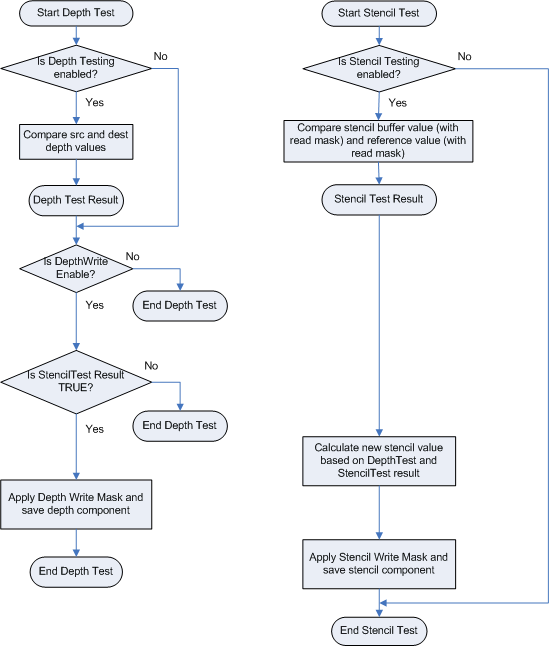

title: Output-Merger Stage description: The output-merger (OM) stage generates the final rendered pixel color using a combination of pipeline state, the pixel data generated by the pixel shaders, the contents of the render targets, and the contents of the depth/stencil buffers. ms.assetid: 8be68c15-2deb-4804-b683-30080a876189 keywords:
The output-merger (OM) stage generates the final rendered pixel color using a combination of pipeline state, the pixel data generated by the pixel shaders, the contents of the render targets, and the contents of the depth/stencil buffers. The OM stage is the final step for determining which pixels are visible (with depth-stencil testing) and blending the final pixel colors.
Differences between Direct3D 9 and Direct3D 10:
A depth-stencil buffer, which is created as a texture resource, can contain both depth data and stencil data. The depth data is used to determine which pixels lie closest to the camera, and the stencil data is used to mask which pixels can be updated. Ultimately, both the depth and stencil values data are used by the output-merger stage to determine if a pixel should be drawn or not. The following diagram shows conceptually how depth-stencil testing is done.

To configure depth-stencil testing, see Configuring Depth-Stencil Functionality. A depth-stencil object encapsulates depth-stencil state. An application can specify depth-stencil state, or the OM stage will use default values. Blending operations are performed on a per-pixel basis if multisampling is disabled. If multisampling is enabled, blending occurs on a per-multisample basis.
The process of using the depth buffer to determine which pixel should be drawn is called depth buffering, also sometimes called z-buffering.
Once depth values reach the output-merger stage (whether coming from interpolation or from a pixel shader) they are always clamped: z = min(Viewport.MaxDepth,max(Viewport.MinDepth,z)) according to the format/precision of the depth buffer, using floating-point rules. After clamping, the depth value is compared (using DepthFunc) against the existing depth-buffer value. If no depth buffer is bound, the depth test always passes.
If there is no stencil component in the depth-buffer format, or no depth buffer bound, then the stencil test always passes. Otherwise, functionality is unchanged from Direct3D 9.
Only one depth/stencil buffer can be active at a time; any bound resource view must match (same size and dimensions) the depth/stencil view. This does not mean the resource size must match, just that the view size must match.
For more information about depth-stencil testing, see tutorial 14.
Blending combines one or more pixel values to create a final pixel color. The following diagram shows the process involved in blending pixel data.
Conceptually, you can visualize this flow chart implemented twice in the output-merger stage: the first one blends RGB data, while in parallel, a second one blends alpha data. To see how to use the API to create and set blend state, see Configuring Blending Functionality.
Fixed-function blend can be enabled independently for each render target. However there is only one set of blend controls, so that the same blend is applied to all RenderTargets with blending enabled. Blend values (including BlendFactor) are always clamped to the range of the render-target format before blending. Clamping is done per render target, respecting the render target type. The only exception is for the float16, float11 or float10 formats which are not clamped so that blend operations on these formats can be done with at least equal precision/range as the output format. NaN's and signed zeros are propagated for all cases (including 0.0 blend weights).
When you use sRGB render targets, the runtime converts the render target color into linear space before it performs blending. The runtime converts the final blended value back into sRGB space before it saves the value back to the render target.
Differences between Direct3D 9 and Direct3D 10:
This feature enables the output-merger stage to simultaneously use both pixel shader outputs (o0 and o1) as inputs to a blending operation with the single render target at slot 0. Valid blend operations include: add, subtract and revsubtract. Valid blend options for SrcBlend, DestBlend, SrcBlendAlpha or DestBlendAlpha include: D3D11_BLEND_SRC1_COLOR, D3D11_BLEND_INV_SRC1_COLOR, D3D11_BLEND_SRC1_ALPHA, D3D11_BLEND_INV_SRC1_ALPHA. The blend equation and the output write mask specify which components the pixel shader is outputting. Extra components are ignored.
Writing to other pixel shader outputs (o2, o3 etc.) is undefined; you may not write to a render target if it is not bound to slot 0. Writing oDepth is valid during dual source color blending.
For examples, see blending pixel shader outputs.
A pixel shader can be used to render to at least 8 separate render targets, all of which must be the same type (buffer, Texture1D, Texture1DArray, and so on). Furthermore, all render targets must have the same size in all dimensions (width, height, depth, array size, sample counts). Each render target may have a different data format.
You may use any combination of render targets slots (up to 8). However, a resource view cannot be bound to multiple render-target-slots simultaneously. A view may be reused as long as the resources are not used simultaneously.
Use an output-write mask to control (per component) what data can be written to a render target.
A sample mask is a 32-bit multisample coverage mask that determines which samples get updated in active render targets. Only one sample mask is allowed. The mapping of bits in a sample mask to the samples in a resource is defined by a user. For n-sample rendering, the first n bits (from the LSB) of the sample mask are used (32 bits it the maximum number of bits).
| Topic | Description |
|---|---|
| Configuring Depth-Stencil Functionality | This section covers the steps for setting up the depth-stencil buffer, and depth-stencil state for the output-merger stage. |
| Configuring Blending Functionality | Blending operations are performed on every pixel shader output (RGBA value) before the output value is written to a render target. If multisampling is enabled, blending is done on each multisample; otherwise, blending is performed on each pixel. |
| Depth Bias | Polygons that are coplanar in 3D space can be made to appear as if they are not coplanar by adding a z-bias (or depth bias) to each one. |